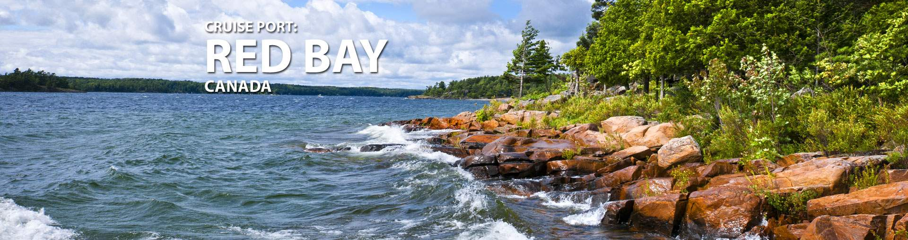
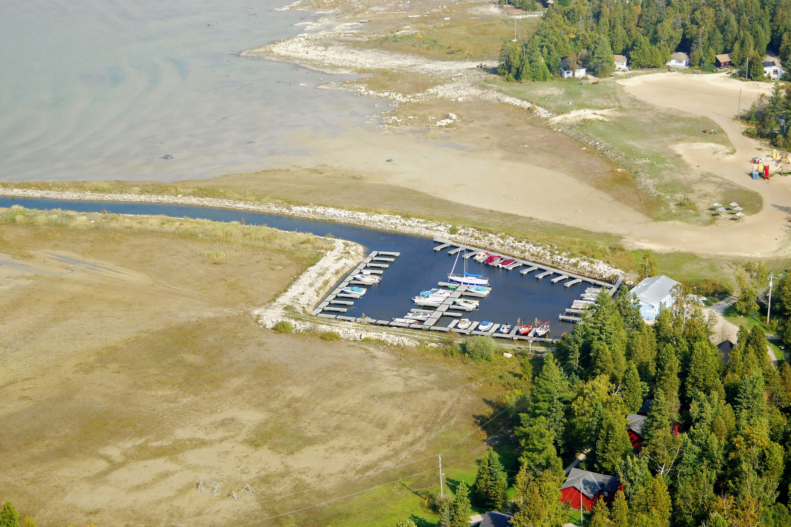
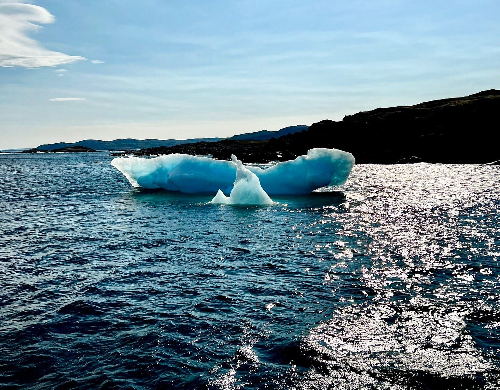
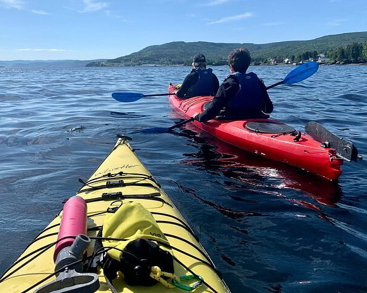

Introduction
Red Bay is a fishing village on the southern coast of Labrador, Canada. It was once a whaling point for the Basques in North America. From 1550 to the mid-17th century, Red Bay was home to three Galleons and four smaller Chalupas, and the discovery of these whaling tools has made Red Bay one of the most valuable underwater archaeological sites in North America. In June 2013, Red Bay was registered as a World Cultural Heritage by UNESCO.

Geography
Red Bay is a natural harbor in the bay of the same name, named after the area's red granite, which served as a anchorage for naval vessels during World War II. Penney Island and Saddle Island in the bay were once whaling places for the Basques. Archeology found that the whaling ship San Juan sank near Saddle Island.

History
From 1550 to the 17th century, Red Bay (then called Walvis Bay) was a whaling center for the Basques. A study by Memorial University of Newfoundland found that Basque sailors from southern France and northern Spain sent 15 ships and 600 men to the Formosa Channel each season to hunt right whales and bowhead whales. In 1565, a whaler named the San Juan sank there along with several Chalupas. Another Galleon, discovered at the site in 2004, is the fourth transoceanic vessel discovered at the site. About 140 whalers are buried in the cemetery near Saddle Island, and they are thought to have died from drowning and exposure. In 1979, Red Bay was registered as a Canadian National Historic Site and in 2013, it was registered as a World Cultural Heritage.

Take a hike along the beach and step into the interpretation centre to see an eight-metre chalupa, which whalers used on the ocean to harpoon their giant catch. To get a full appreciation for the size of these whales, compare the chalupa to the assembled collections of whalebones displayed. These showcase a time of prosperity and dangerous adventure, illustrating a long-ago way of life.
